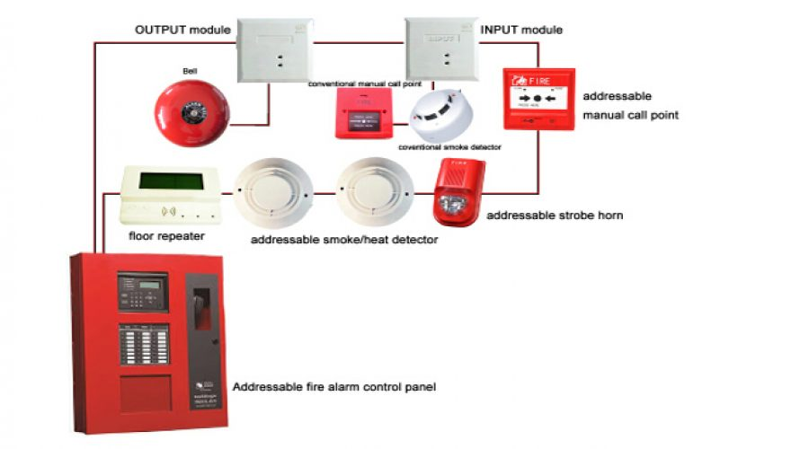

How to build
Step1: Fire Alarm Circuit Block Diagram Estimation
The block diagram of fire alarm circuit block diagram can be estimated based on the requirement and application of project.The simple fire alarm system is one of the innovative solderless breadboard projects. This fire alarm project block diagram consists of thermistor, transistor, indicator and battery.
Step2: Gathering Required Components for Fire Alarm Circuit
Based on the block diagram of fire alarm system the components required for designing fire alarm circuit can be estimated. Thus, all the required electrical and electronic components can be purchased from any online electronics stores (like www.edgefxkits.com in various types of kits such as a project kit – individual components, ready-made kit – fully developed kit-plug & play type and DIY kit – Do It Yourself kit). The electronics components such as thermistor, transistor, indicator, battery, etc., are required components for designing fire alarm circuit.
Step3: Estimating the Fire Alarm Circuit Diagram
The components are connected together to form the fire alarm circuit using connecting wires as shown in the above figure. Here, a solderless breadboard is used to connect all the components to form the required fire alarm project circuit. The same set of components can be used for designing different circuits or to enhance the circuit by connecting a few additional components.
Step4: Connecting & Soldering Circuit
The same circuit after testing output over solderless breadboard can be connected over PCB (printed circuit board) and soldered to avoid misplacing of the components or disconnection of the circuit. The soldering of components to form a circuit can be done by following a few basic soldering techniques. Thus, the circuit can be connected and soldered on PCB according to the tested circuit.
Step5: Fire Alarm Working Principle
The fire alarm working principle is based on thermistor used in the fire alarm circuit. This fire alarm circuit is used to identify and indicate an increase in temperature beyond certain value (temperature of an enclosed area).
The increase in temperature is indicated by turning ON the LED (cooling system can be used to bring the temperature to its normal value). Thus, if the temperature exceeds a certain value, then the cooler or load turns ON automatically without any monitoring system. To actuate the relay instead of LED, operational amplifier along with negative coefficient thermistor can be used.
In this fire alarm mini project circuit, thermistor is used as a temperature sensor because thermistor is very economical compared to all other temperature sensors. But, for applications that require linear response correction is needed as thermistors exhibit highly nonlinear resistance vs temperature characteristics. In the above block diagram if the temperature changes then the input to NPN transistor changes. The output of NPN transistor is used to turn ON the LED indicator. The accuracy of this fire alarm mini project can be increased by using a digital temperature sensor instead of analog. This project can be further enhanced to extinguish fire using fire fighting robot project.